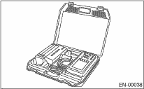
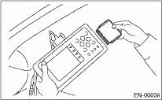
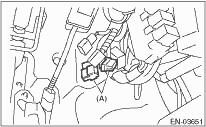
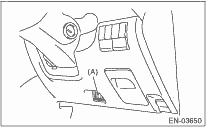
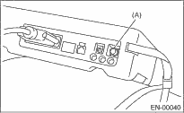

1. Prepare the Subaru Select Monitor kit. 

2. Connect the diagnosis cable to the Subaru Select Monitor.
3. Insert the cartridge to Subaru Select Monitor.

4. Connect the test mode connector at the lower portion of instrument panel (on the driver’s side).

|
(A) |
Test mode connector |
5. Connect the Subaru Select Monitor to data link connector at the lower portion of instrument panel (on the driver’s side).

|
(A) |
Data link connector |
CAUTION:
Do not connect the scan tools except for Subaru Select Monitor and general scan tool.
6. Turn the ignition switch to ON (engine OFF) and Subaru Select Monitor power switch to ON.

|
(A) |
Power switch |
7. On the «Main Menu» display screen, select {Each System Check} and press the [YES] key.
8. On the «System Selection Menu» display screen, select {Engine Control System} and press the [YES] key.
9. Press the [YES] key after the information of engine type has been displayed.
10. On the «Engine Diagnosis» display screen, select the {System Operation Check Mode} and press the [YES] key.
11. On the «System Operation Check Mode» display screen, select the {Actuator ON/OFF Operation} and press the [YES] key.
12. Select the desired compulsory actuator on the «Actuator ON/OFF Operation» display screen and press the [YES] key.
13. Pressing the [NO] key completes the compulsory valve operation check mode. The display will then return to the «Actuator ON/OFF Operation» screen.
• A list of the support data is shown in the following table.
|
Contents |
Display |
|
Compulsory fuel pump relay operation check |
Fuel Pump |
|
Compulsory radiator fan relay operation check |
Radiator Fan Relay |
|
Compulsory air conditioning relay operation check |
A/C Compressor Relay |
|
Compulsory purge control solenoid valve operation check |
CPC Solenoid |
NOTE:
• The following parts will be displayed but not functional.
|
Display |
|
EGR Solenoid |
|
ASV Solenoid |
|
FICD Solenoid |
|
Pressure Switching Sol.1 |
|
Pressure Switching Sol.2 |
|
Turbocharger Wastegate Solenoid |
|
PCV Solenoid |
|
Vent Control Solenoid |
|
AAI Solenoid |
|
Fuel Tank Sensor Control Valve |
|
Secondary Air Combination Valve 1 |
• For detailed operation procedure, refer to the “SUBARU SELECT MONITOR OPERATION MANUAL”.